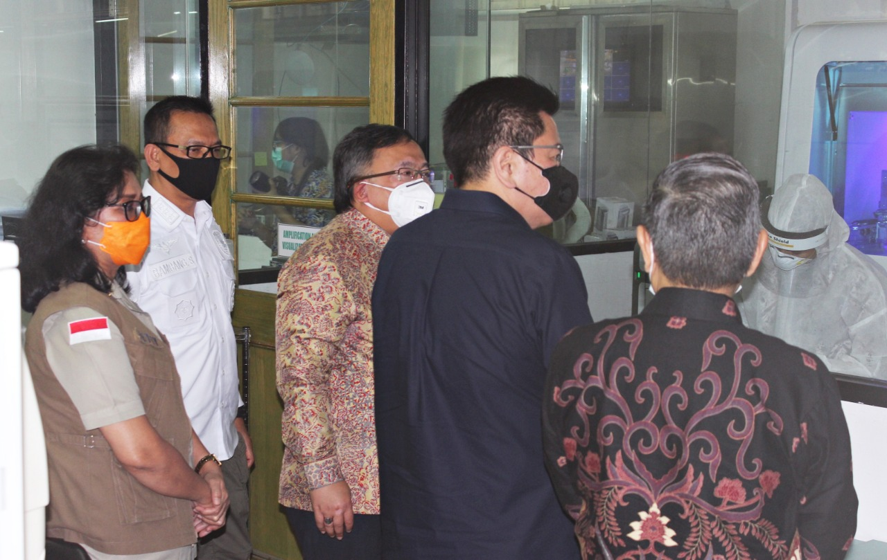

Gugus Tugas Nasional Luncurkan Mesin Deteksi COVID-19

JAKARTA - Gugus Tugas Nasional meluncurkan mesin deteksi COVID-19 dengan nama COBAS 6800 Fully-automated Molecular System.
Mesin ini mampu untuk menguji sampel swab dengan kapasitas 1.000 sampel per hari. Mesin ini merupakan mesin kedua di Indonesia.
Salah satu mesin telah ditempatkan di Lembaga Biologi Molekuler (LBM) Eijkman. Mesin untuk mendeteksi virus SARS-CoV-2 ini
menggunakan pendekatan molekuler atau nucleid acid amplification testing (NAAT). Penambahan mesin COBAS 6800 FMS yang berkapasitas
maksimal seribu sampel per hari ini akan mendukung target pengujian sampel hingga 30 ribu sampel per hari.
Peluncuran mesin pendeteksi COVID-19 ini dilakukan oleh Menteri Riset dan Teknologi/ Badan Riset dan Nasional (Menristek/BRIN)
Bambang Permadi Soemantri Brodjonegoro di LBM Eijkman di Jakarta, pada hari ini, Kamis (16/7). Ia berharap mesin ini dapat meningkatkan
kapasitas uji sampel COVID-19 di Indonesia.
"Kami bangga Lembaga Eijkman melakukan terobosan hari ini menggunakan mesin Cobas 6800 System yang dapat menguji 1.000 sampel per hari
sehingga meningkatkan kapsitas uji sampel Covid-19 di Indonesia" ujar Bambang.
Sementara itu, Inspektur Utama BNPB Tetty Saragih menyampaikan bahwa pihaknya memberikan dukungan terhadap keberadaan dan pengadaan mesin deteksi ini.
"Kami sangat bangga dan apresiasi dengan penggunaan kata per 24 Jam, tegas, artinya sepanjang hari.
Sesuai dengan pola kerja dalam penanggulangan bencana yang memang tujuannya adalah menyelamatkan nyawa manusia"
ujar Tetty yang mewakili Ketua Gugus Tugas Nasional Doni Monardo. Semangat penanggulangan bencana di LBM Eijkman diharapkan berperan
secara signifikan dalam upaya memutus mata rantai penularan COVID -19 yang dilakukan secara bersama-sama dengan ratusan laboratorium yang
tersebar di seluruh wilayah Indonesia.
Kepala LBM Eijkman Amin Soebandrio menyebut pengoperasian Cobas 6800 System ini semuanya dilakukan secara otomatis dan tidak ada intervensi
manusia. "Tidak ada intervensi manusia ketika proses berjalan sehingga meningkatkan keamanan operator. Fully automatic, artinya terkendali,
kualitasnya terjamin dan lebih cepat, itu kenapa itu bisa seribu tes per hari" ujar Amin. Turut hadir dalam peresmian mesin deteksi COVID-19
COBAS 6800 Fully Automated Molecular System adalah Sekretaris Utama BIN Komjen Pol Drs. Bambang Sunarwibowo, Presiden Komisaris PT.
Tempo Scan Pacific Tbk. Handojo S. Muliadi dan Head of Sales PT. Roche, Emilani Nababan.
BERITA LAINNYA
PANTAU COVID-19